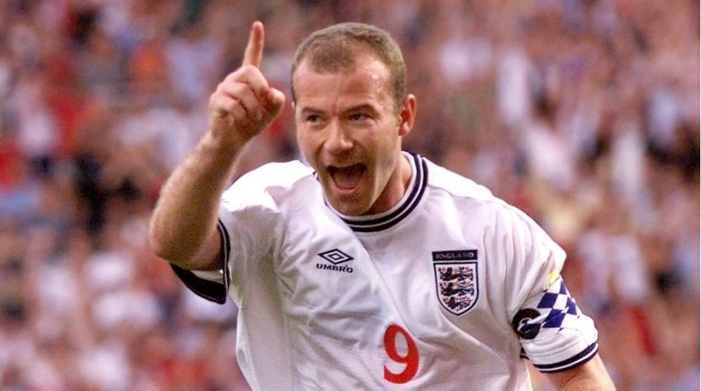
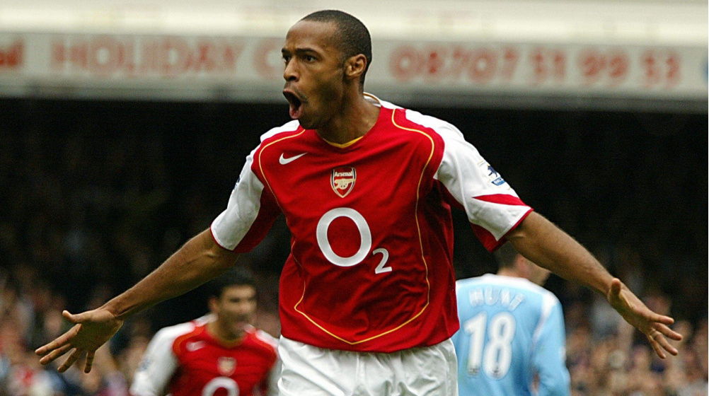
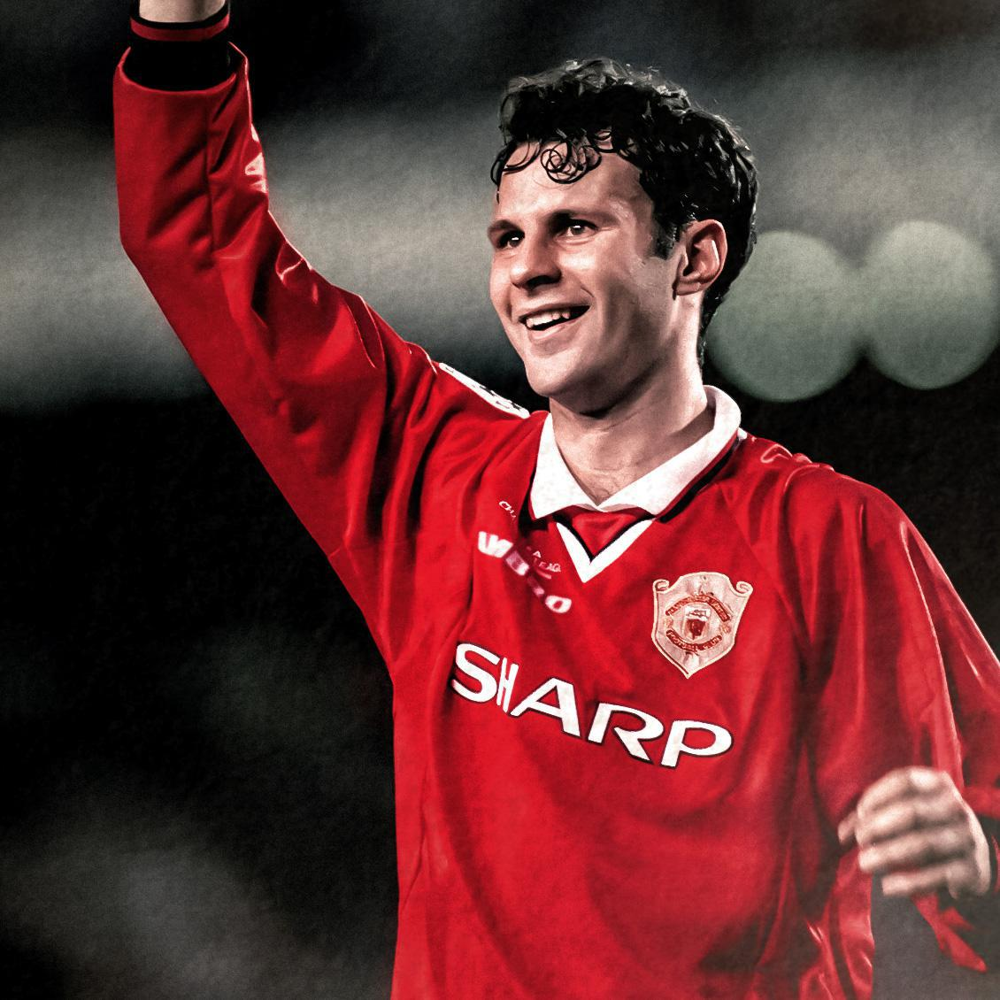
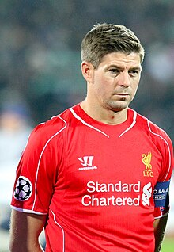
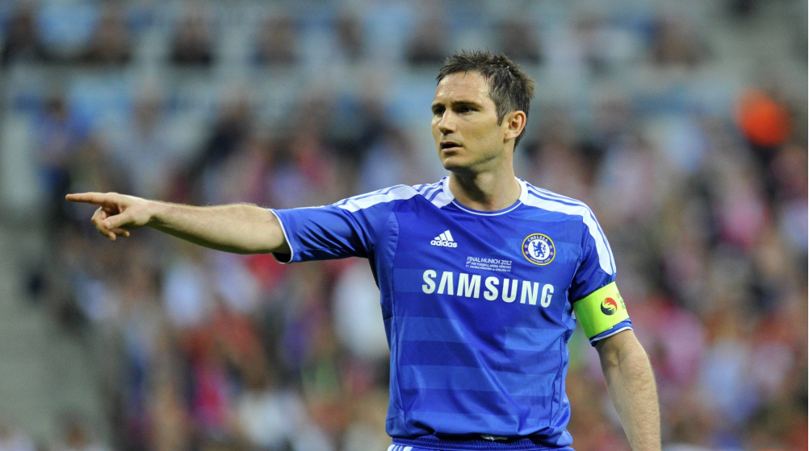

La Premier League es la máxima categoría del fútbol inglés y una de las
ligas más icónicas y emocionantes del mundo. Desde su fundación en 1992,
ha sido el epicentro del fútbol de élite, atrayendo a los mejores talentos
y cautivando a audiencias globales con su intensidad, calidad técnica y
drama sin fin. Con una rica historia, una competencia feroz entre los
clubes más prestigiosos y una inigualable pasión por parte de los
aficionados, la Premier League se ha convertido en un fenómeno cultural y
deportivo que trasciende fronteras y continentes.
Historia
La creación de la Premier League en 1992 marcó un punto de inflexión en el
fútbol inglés y europeo. Surgió en un momento en que el fútbol estaba
experimentando una transformación significativa en términos de
comercialización y globalización. Antes de la formación de la Premier
League, la Football League First Division era la máxima categoría del
fútbol inglés desde 1888. Sin embargo, a fines de la década de 1980 y
principios de la década de 1990, la Football League tuvo problemas
financieros y estructurales, lo que llevó a la necesidad de reformas.Fue
entonces cuando varios clubes de la First Division, liderados por los
denominados "Big Five" (Manchester United, Liverpool, Arsenal, Tottenham
Hotspur y Everton), comenzaron a presionar por un cambio radical en la
estructura del fútbol inglés. Buscaban una mayor autonomía en la gestión
de los derechos televisivos y una mayor participación en los ingresos
generados por la liga.Finalmente, en 1992, los clubes de la Football
League First Division decidieron separarse y formar su propia liga, la
Premier League. Este movimiento les permitió negociar contratos de
televisión por separado y obtener mayores ingresos comerciales. Sky Sports
fue el primer gran socio televisivo de la Premier League, lo que llevó a
una considerable inyección de dinero en el fútbol inglés y a un aumento en
la calidad de los equipos y jugadores que competían en la liga.Desde
entonces, la Premier League ha crecido en popularidad y prestigio,
consolidándose como una de las ligas más importantes del mundo. Ha
producido algunos de los momentos más memorables en la historia del
fútbol, con equipos y jugadores legendarios que han dejado una marca
indeleble en el deporte.
Formato y Equipos
La liga consta de 20 equipos que compiten entre sí en un sistema de todos
contra todos, donde cada equipo juega 38 partidos durante una temporada
(19 partidos en casa y 19 fuera de casa). Los tres equipos con menos
puntos al final de la temporada son relegados a la English Football League
Championship, mientras que los dos primeros equipos de la Championship y
el ganador de un playoff entre el tercero al sexto ascienden a la Premier
League.
Actualidad
La Premier League sigue siendo una de las ligas más competitivas y
emocionantes del mundo. Es conocida por su ritmo rápido, su alta calidad
técnica y táctica, y por la pasión de sus aficionados. Los derechos de
televisión de la Premier League son algunos de los más caros del mundo, lo
que ha llevado a una enorme popularidad global y a una enorme cantidad de
ingresos para los clubes.
Los mejores equipos de la Premier League
Manchester City: El Manchester City Football Club,
conocido como Manchester City, es un club de fútbol de la ciudad de
Mánchester, Inglaterra, que juega en la Premier League. Fue fundado el
23 de noviembre de 1880. El club disputa sus partidos en el Etihad
Stadium desde 2003. En términos de trofeos ganados, es el quinto club
más exitoso en el fútbol inglés.
Arsenal: El Arsenal Football Club es un club de
fútbol profesional con sede en Holloway, Londres, Inglaterra. Fundado
en 1886, en 1893, se convirtió en el primer club del sur de Inglaterra
en unirse a la Football League, y llegó a la Primera División en 1904.
Estableció un récord inglés de la racha invicta más larga en la máxima
categoría con 49 partidos entre 2003 y 2004, recibiendo el apodo de
Los Invencibles.
Liverpool: El Liverpool Football Club es un club de
fútbol profesional inglés con sede en Liverpool, Inglaterra, que
disputa la Premier League, máxima competición futbolística en dicho
país. Fue miembro fundador de la «Premier League» en 1992. Sus colores
distintivos históricamente son el rojo —por lo cual reciben el
apelativo de «The Reds», y en menor medida el blanco. Es el club
inglés con mayor número de títulos internacionales.
Chelsea: El Chelsea Football Club, conocido
simplemente como Chelsea, es un club de fútbol profesional de
Inglaterra con sede en el distrito de Fulham, Londres.Fundado el 10 de
marzo de 1905. Disputa sus partidos como local en el estadio de
Stamford Bridge.
Manchester United: El Manchester United Football
Club, conocido como Manchester United o simplemente United, es un club
de fútbol profesional inglés de la ciudad de Mánchester, Inglaterra,
que compite en la Premier League. Disputa sus partidos como local en
el estadio Old Trafford, desde 1910. Fue fundado el 5 de marzo de
1878.
Mejores jugadores que han pasado por la Premier League:
Alan Shearer: El máximo goleador en la historia de la
Premier League, Shearer brilló principalmente con el Blackburn Rovers
y el Newcastle United, anotando una cantidad impresionante de goles y
siendo una figura icónica en el fútbol inglés.

Thierry Henry: Uno de los delanteros más destacados
en la historia de la Premier League, Henry fue una fuerza dominante en
el Arsenal durante su época dorada, siendo un contribuyente clave en
los éxitos del equipo en la liga.

Ryan Giggs: Una leyenda del Manchester United, Giggs
pasó toda su carrera en el club, ganando múltiples títulos de Premier
League y siendo uno de los jugadores más condecorados en la historia
del fútbol inglés.

Steven Gerrard: Un centrocampista emblemático del
Liverpool, Gerrard fue una figura clave en el equipo durante muchos
años, liderando al club a múltiples éxitos en la Premier League y en
competiciones europeas.

Cristiano Ronaldo: Aunque su tiempo en la Premier
League fue relativamente corto en comparación con otros jugadores,
Ronaldo dejó una impresión duradera en el Manchester United antes de
su traslado al Real Madrid. Durante su tiempo en Inglaterra, ganó
múltiples títulos de liga y se consolidó como uno de los mejores
jugadores del mundo.
Wayne Rooney: Otro jugador emblemático del Manchester
United, Rooney es el máximo goleador en la historia del club y dejó
una marca indeleble en la Premier League con su habilidad goleadora y
su versatilidad en el campo.
Frank Lampard: Un centrocampista prolífico conocido
por su capacidad para marcar goles desde el mediocampo, Lampard fue
una figura clave en el Chelsea durante muchos años, contribuyendo en
gran medida a los éxitos del club en la Premier League y en
competiciones europeas.

Algunas de las mejores jugadas de la Premier league: